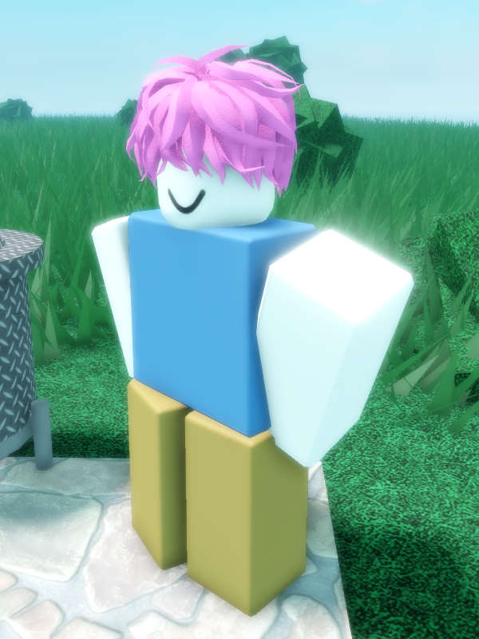

Toby

Toby is one of the most notable characters in Spanish Village 2. He has a blue shirt, beige pants, pink hair and white skin.
Trivia
• Toby (presumably) works at the farm.
• Toby will give you money in exchange for harvested wheat (50 Euro for 1 wheat).
• Toby is based off of one of Green's friends.
• Toby will give you money in exchange for harvested wheat (50 Euro for 1 wheat).
• Toby is based off of one of Green's friends.